Synchronization
会出一道大题，据说比生产者和消费者还简单（什么
Background
- 程序可能被打断
- 同时访问共享的数据可能造成数据不一致性
例子：两个线程交替执行
counter ++，结果比 loop 数少很多因为
counter++不是原子操作，在 ++ 过程中可能发生这种情况：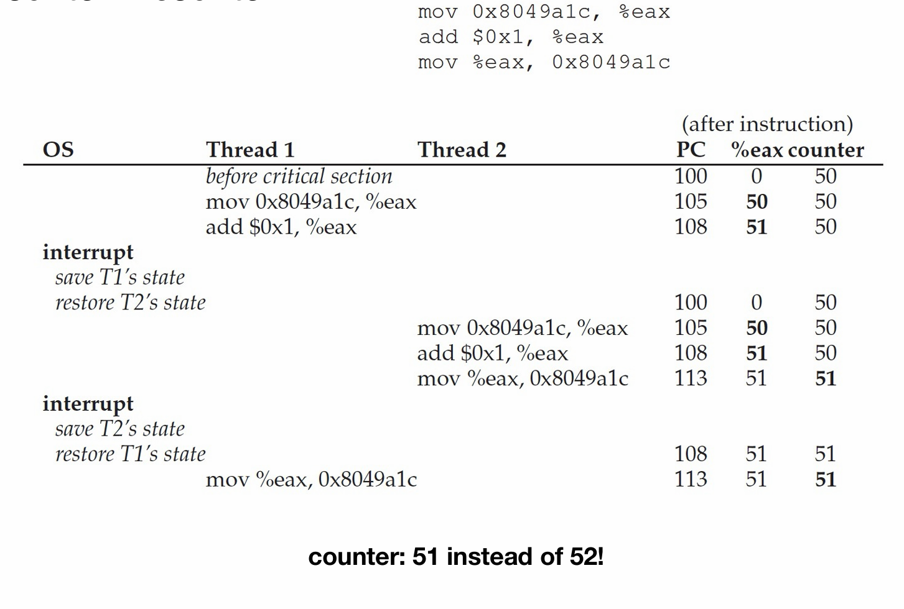
Race Condition
- Definition - Several processes (or threads) access and manipulate the same data concurrently and the outcome of the execution depends on the particular order in which the access takes place
- Race Condition in Kernel - 两个进程同时 fork，会得到同一个 pid
Critial-Section
- General structure of process
- 只有 Critial-Section 会 change common variables, update table, write file, etc.
- 因此只能有一个 Critial-Section 在运行
- when one process in critical section, no other may be in its critical section
- each process must ask permission to enter critical section in entry section
- the permission should be released in exit section
- Critical-Section Handling in OS
- Single-core system: preventing interrupts
- Multiple-processor: preventing interrupts are not feasible
- preemptive or non-preemptive
- 三个要求（重要）
- multual exclusive 互斥访问
- Progress 空闲让进
- bounded-waiting 有限等待
Peterson solution
solves two-processes/threads synchronization
- It assumes that LOAD and STORE are atomic
- Two processes share two variables
- boolean flag[2]: whether a process is ready to enter the critical section
- int turn: whose turn it is to enter the critical section
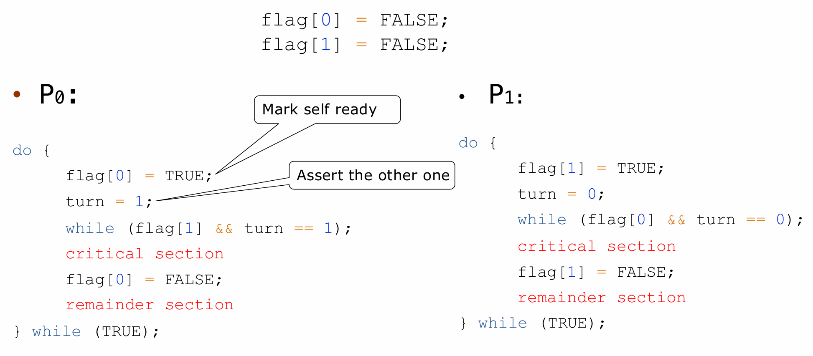
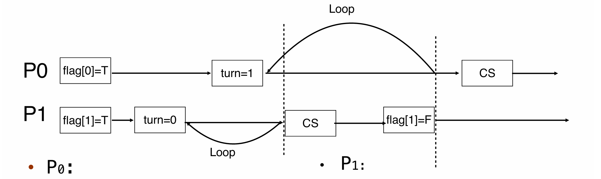
- 每种情况下都满足三个条件
多线程乱序情况下，结果可能不一致
Hardware Support for Synchronization
Uniprocessors: disable interrupts（多核只需要 disable 一个核的 int）
Memory Barriers（不要求掌握）
Hardware Instruction
Test-and-Set Instruction
- atomically
- Set and return old value
用这个原子操作防止打断：
bool lock = FALSE
do {
while (test_set(&lock)); // busy wait
critical section
lock = FALSE;
remainder section
} while (TRUE);
不能满足 bounded-waiting
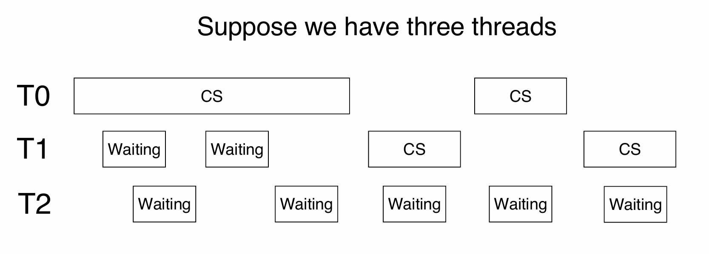
改进：轮流传递锁
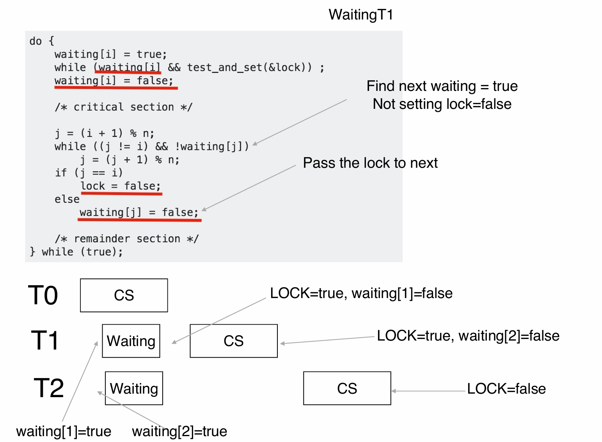
Compare-and-Swap Instruction
现实实现了
- x86 汇编里的 xchg/ARM
- 当旧值和预期相同（没被其他进程改动过），才赋予新值
- 返回旧值
int compare_and_swap(int *value, int expected, int new_value)
{
int temp = *value;
if (*value == expected)
*value = new_value;
return temp;
}
- 如果 store 前别的进程改动了数据，则当前进程的改动回滚
while (true)
{
while (compare_and_swap(&lock, 0, 1) != 0)
; /* do nothing */
/* critical section */
lock = 0;
/* remainder section */
}
Atomic Variables
increment(&sequence);- 保证自增时不被打断
void increment(atomic_int *v) {
int temp;
do {
temp = *v;
} while (temp != (compare_and_swap(v,temp,temp+1)));
}
Mutex Locks
等同于 spin lock
- Protect a critical section by first
acquire()a lock thenrelease()the lock - Calls to
acquire()andrelease()must be atomic (硬件实现) - 需要 busy waiting
while(true){
acquire lock// busy waiting
critical section// busy waiting
release lock// busy waiting
remainder section
}
bool locked = false;
acquire() {
while (compare_and_swap(&locked, false, true))
; //busy waiting
}
release() {
locked = false;
}
问题：太多的 spin 浪费 CPU 时间
t0 获得锁，schedule 让 t1 执行，t1 的时间片被用来 busy waiting
解决方法：让没有取得锁的进程 sleep，不放在 ready queue 里 - Semaphore
bool locked = false;
acquire() {
while (test_set(&flag, 1) == 1)
yield(); // give up the CPU
}
Semaphore
- 多了一个 waiting queue
- When the lock is locked, change process’s state to SLEEP, add to the queue, and call schedule()
- Contain S – integer variable，用来表示资源数
- 只能通过两个不可见的原子操作
wait()andsignal()(Originally calledP()andV()Dutch) 访问
- 只能通过两个不可见的原子操作
- 类型
- Counting Semaphore - S 可以有很大范围
- Binary Semaphore - S 只有 0/1（与互斥锁相同
- Two operations:
- Block - 将进程 sleep
- wakeup - 将一个进程放入 ready queue
typedef struct {
int value;
struct list_head * waiting_queue;
} semaphore;
void init(){
flag = 0;
}
void lock(){
}
wait(semaphore *S){
S->value--;
if(S->value < 0){
add this process to S->list;
block();
}
}
signal(semaphore *S){
S->value++;
if(S->value <= 0){
remove a proc.P from S->list;
wakeup(P);
}
}
wait/signal 需要是 atomic 的（用 spinlock）
原因是多个进程 value++/-- 会出错
因此存在 busy waiting
Semaphore sem; // initialized to 1
do {
wait (sem);
critical section // No busy waiting on critical section
signal (sem);
remainder section
} while (TRUE); //while loop but not busy waiting
T1.wait(&sem);
T0.signal(&sem);
Comparison between mutex and semaphore
- Mutex or spinlock
- no blocking
- Waste CPU on looping
- short critical section
- Semaphore
- no looping
- context switch is time-consuming
- long critical section
deadlock -> starvation
Priority Inversion
- 先获得锁的低优先级的进程比高优先级的先执行
- solution：priority inheritance
- 把等待队列种的最高优先级暂时赋给该进程
Linux Synchronization
atomic integers
spinlock
read-write lock/condition variable - 不要求掌握
reproduce
semaphores
- on single-cpu system, spinlocks replaced by enabling/disabling kernel preemption
- down(), up()
reader-writer locks
POSIX - userspace 的实现
Example
有一道大题，程序填空
Bounded-Buffer Problem
问题：两个进程，生产者和消费者，共享 n 个 buffer
- 生产者往 buffer 里放 item
- 消费者从 buffer 中拿 item
- 保证生产者不会往满的 buffer 里放东西，消费者不会从空的 buffer 里拿
变量定义
- n buffers, each can hold one item
- semaphore
mutexinitialized to the value 1 - semaphore
full-slotsinitialized to the value 0 - semaphore
empty-slotsinitialized to the value N
do{
//produce an item
···
wait(empty-slots);
wait(mutex);
//add the item to the buffer
...
signal(mutex);
signal(full-slots);
}while(true)
do {
wait(full-slots);
wait(mutex);
//remove an item from buffer
…
signal(mutex);
signal(empty-slots);
//consume the item
…
} while (TRUE);
不能换 - death-sleep
拥有资源的程序被 sleep，另一个程序 busy waiting
Readers-Writers Problem
问题：数据集被多个进程共享
- readers: only read the data set; they do not perform any updates
- writers: can both read and write
- 目的：允许多个 reader shared access，只允许一个 writer exclusive access
变量定义
- semaphore
mutex初始化为 1 - semaphore
write初始化为 1 - integer
readcounter初始化为 0
do{
wait(mutex);
readcount++;
if(readcount == 1)//first reader block write
wait(write);// read 与 write 互斥
signal(mutex);
//reading data
...
wait(mutex);
readcount--;
if(readcount == 0)
signal(write);// 最后一个 release 的 reader 释放 write 锁
signal(mutex);
}while(true);
不同的优先级
- Reader first（上面的实现
- Writer first - 新的读请求 pending
Dining-Philosophere Problem
模拟 multi-resource synchronization
哲学家围坐在餐桌旁，需要两个筷子吃饭，吃完了放下
- 先后拿起筷子
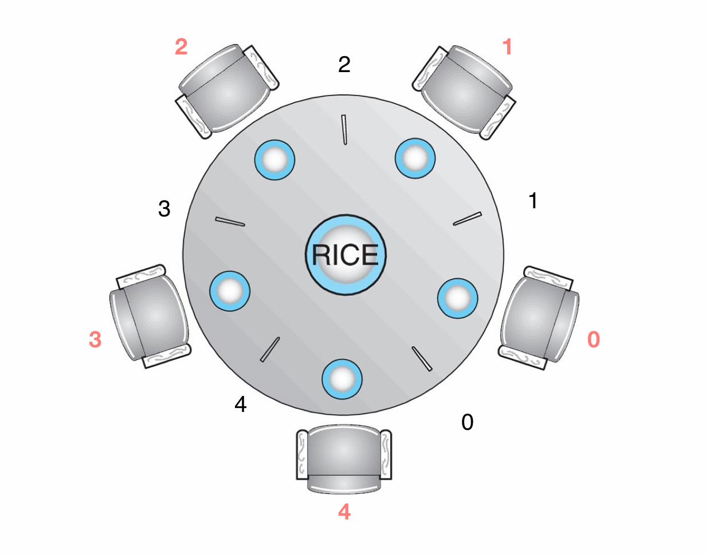
Solution (assuming 5 philosophers):
- semaphore chopstick[5] initialized to 1
do {
wait(chopstick[i]);
wait(chopstick[(i+1)%5]);
eat
signal(chopstick[i]);
signal(chopstick[(i+1)%5]);
think
} while (TRUE);
- 如果同时拿起一边的筷子，会陷入死锁
这个比较难，不要求会解决
Deadlock
Deadlock problem
Deadlock: a set of blocked processes each holding a resource and waiting to acquire a resource held by another process in the set
Bridge Crossing Example
- 只能单向通行，每个车道可以看成一个 resource
- 死锁发生时，可以通过车辆掉头解决 - 资源抢占和回滚
- 大多数操作系统不解决死锁
/* thread one runs in this function */
void*do_work_one(void*param){
pthread_mutex_lock(&first_mutex);
pthread_mutex_lock(&second_mutex);
/* Do some work*/
pthread_mutex_unlock(&second_mutex);
pthread_mutex_unlock(&first_mutex);
pthread_exit(0);
}
/* thread two runs in this function */
void*do_work_two(void*param){
pthread_mutex_lock(&second_mutex);
pthread_mutex_lock(&first_mutex);
/* Do some work*/
pthread_mutex_unlock(&first_mutex);
pthread_mutex_unlock(&second_mutex);
pthread_exit(0);
}
resource allocation graph:
System model
死锁的四个条件
resource R1, R2, ..., Rm 分别有 W1, W2, ..., Wn 个
- Mutual exclusion: a resource can only be used by one process at a time
- Hold and wait: a process holding at least one resource is waiting to acquire additional resources held by other processes
- No preemption: a resource can be released only voluntarily by the process holding it, after it has completed its task
- Circular wait: there exists a set of waiting processes {P0, P1, …, Pn}
- P0 is waiting for a resource that is held by P1
- P1 is waiting for a resource that is held by P2 …
- Pn–1 is waiting for a resource that is held by Pn
- Pn is waiting for a resource that is held by P0
Resource-Allocation Graph
- request edge: directed edge Pi ➞ Rj
- assignment edge: directed edge Rj ➞ Pi
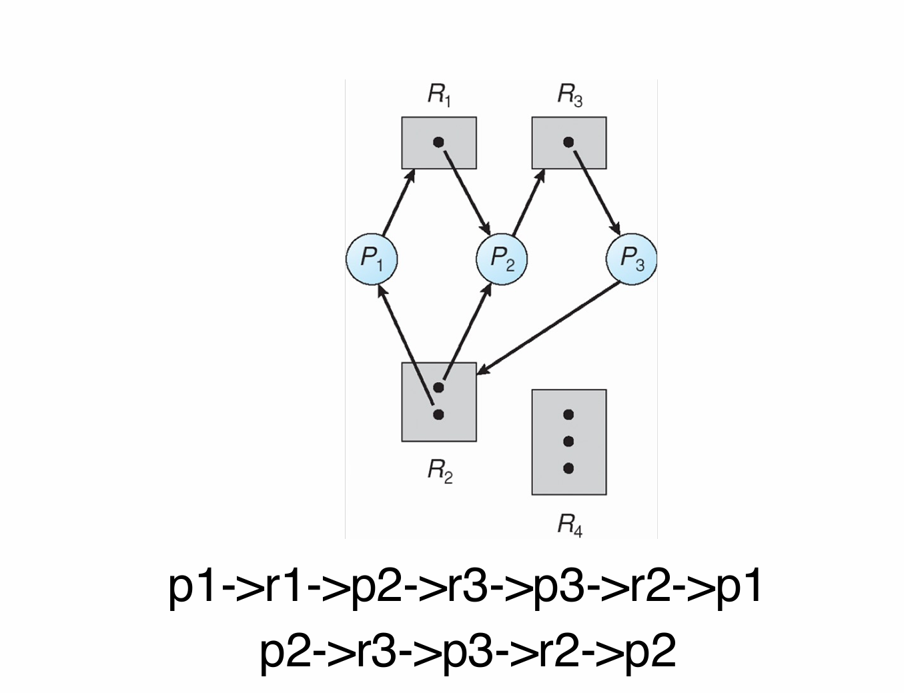
circular wait does not necessarily lead to deadlock
- 没环一定没死锁
- 有环时
- 如果每个资源只有一个，一定死锁
- 有多个，可能死锁
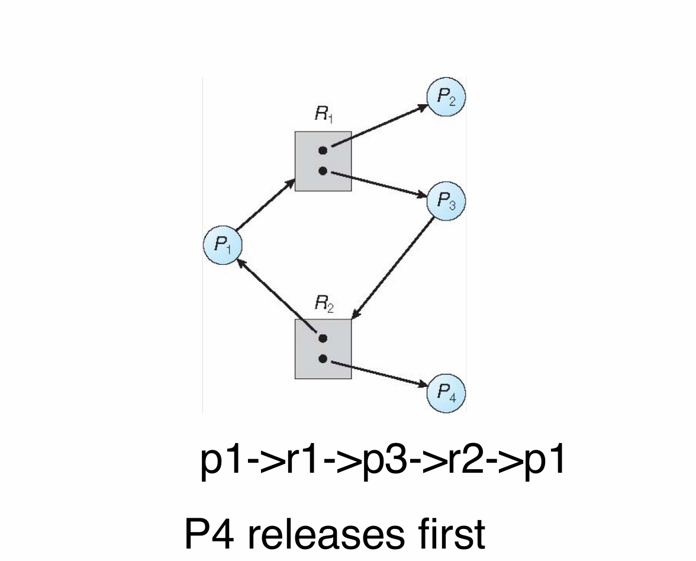
Handling deadlocks
Ensure that the system will never enter a deadlock state (prevention 或者 avoidance)
Allow the system to enter a deadlock state and then recover - database (detection 和 recovery)
ignore
deadlock prevention
打破死锁的四个条件
- prevent mutual exclusion - 不请求共用资源
- prevent hold and wait
- 在运行前分配所有所需资源
- 请求资源时不能有资源
- 资源利用率低，会饥饿
- handle no preemption
- 请求资源 not available 时将所有该资源释放
- preempted resources are added to the list of resources it waits for
- process will be restarted only when it can get all waiting resources
- handle circular wait
- 为资源排序
- 只能以升序请求资源
- 很多 os 用这个
deadlock avoidance
require extra information about how resources are to be requested
- Each process declares a max number of resources it may need
- Deadlock-avoidance algorithm ensure there can never be a circular-wait condition
- Resource-allocation state
- the number of available and allocated resources
- the maximum demands of the processes
safe state - for each Pi, resources that Pi can still request can be satisfied by currently available resources + resources held by all the Pj
- safe state 一定不死锁
- unsafe state 可能死锁
- deadlock avoidance - 保证不进入 unsafe state
deadlock avoidance algorithm
- Single instance of each resource type ➠ use resource-allocation graph
- claim edge Pi ➞ Rj indicates that process Pi may request resource R
- resources must be claimed a priori in the system
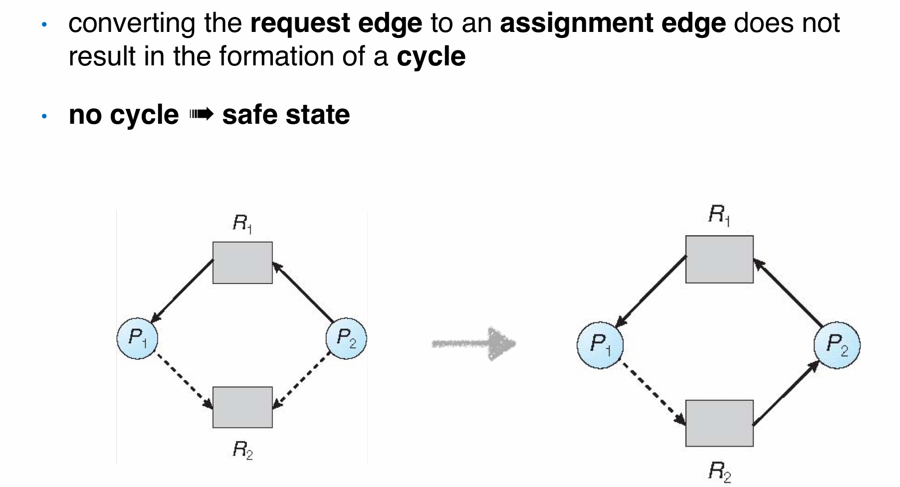
- Multiple instances of a resource type ➠ use the banker’s algorithm
Banker's Algorithm
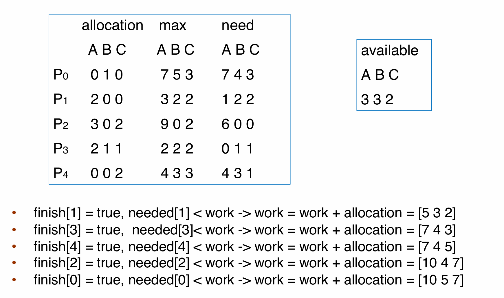
deadlock detection
- Maintain a wait-for graph, nodes are processes
- Pi➞Pj if Pi is waiting for Pj
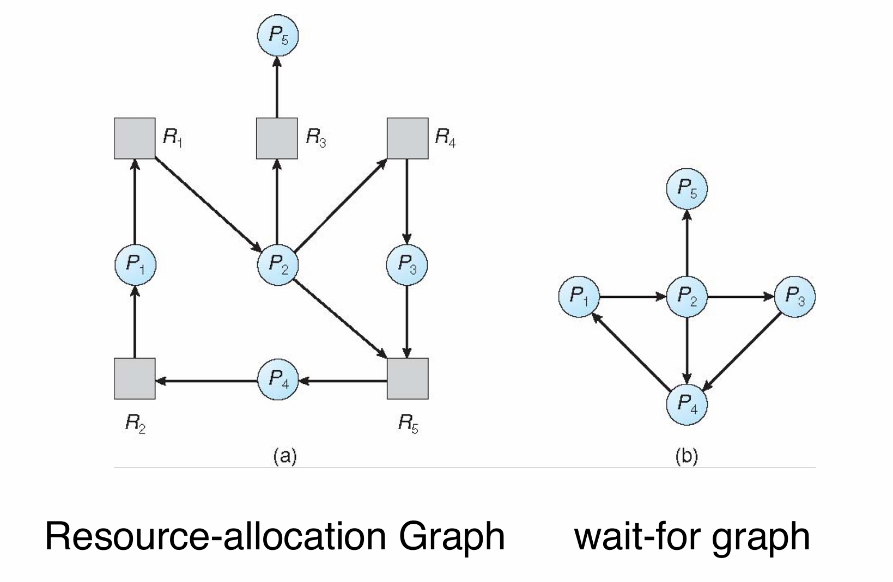
detect 到了环路 -> 死锁
算法：
- 一个每次走一步，一个每次走两步
- 走两步的遇到了前者，则存在环
- \(O(n^2)\)
deadlock recovery
kill process
- 把所有死锁环里的程序都 kill
- 一次 kill 一个，看死锁什么时候消除
- Select a victim
- Rollback
- 可能会 starvation